Civilizations and origins
Canaan, the Hebrews, the Romans, Byzantium, Islam, the Crusades, and centuries of religious and territorial disputes.
No conflict comes from nowhere
A rigorous, accessible historical journey through more than four thousand years of disputes, empires, religions, borders and open wounds.

Canaan, the Hebrews, the Romans, Byzantium, Islam, the Crusades, and centuries of religious and territorial disputes.
Zionism, the British Mandate, the partition of Palestine and the creation of the State of Israel.
1948, the Six-Day War, the intifadas, Gaza, refugees, and the struggle for control of the territory.
The United States, Iran, the UN, Hamas, international diplomacy and the global battle over the narrative.
The book
This book offers a deep, detailed look into the conflict between Israel and Palestine, exploring its historical roots and the events that have shaped the region up to the present day.
With a rigorous yet accessible approach, the book traces the key historical milestones that transformed the Middle East: from the ancient peoples of Canaan, the Hebrew kingdoms and Roman rule, to the rise of Zionism, the British Mandate, the creation of the State of Israel, the Arab-Israeli wars, the Intifadas, Gaza and today's conflicts.
Through a detailed timeline, maps, treaties, wars and key political decisions, the book examines the religious, territorial, social and geopolitical tensions that have shaped not only Israelis and Palestinians, but the international balance of power for decades.
Beyond headlines and oversimplified narratives, this book shows a conflict built over centuries, where victims, responsibilities, interests and historical memories rarely fit into simple categories.
This isn't a story of good guys and bad guys. It's the story of how the Middle East became one of the most significant open wounds of the modern world.

Historical timeline
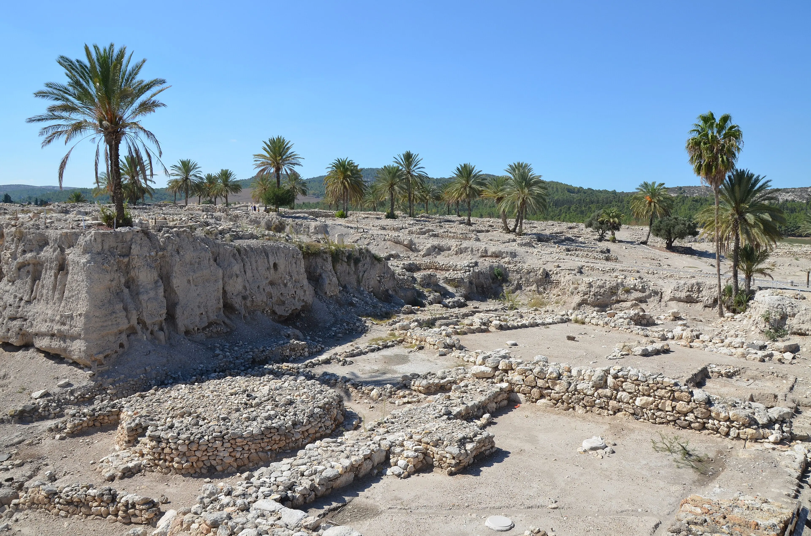
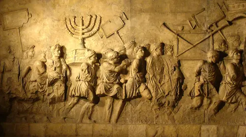


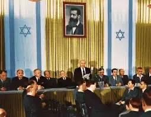
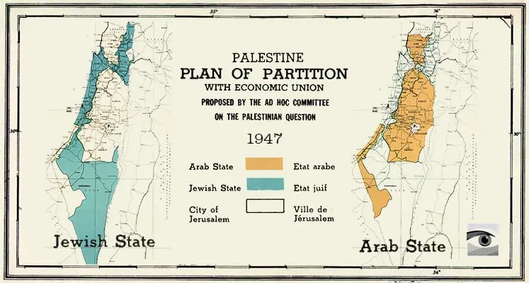

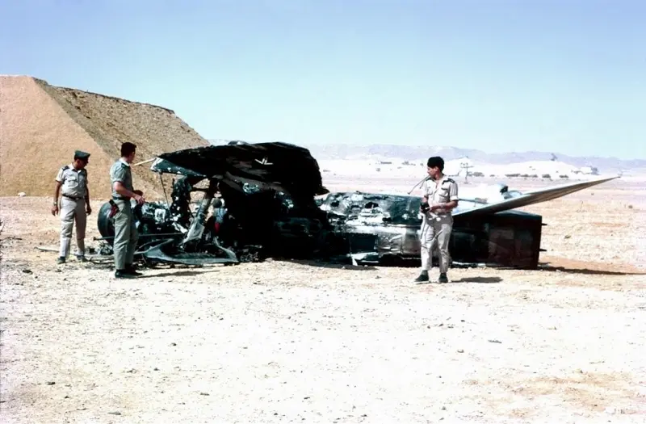

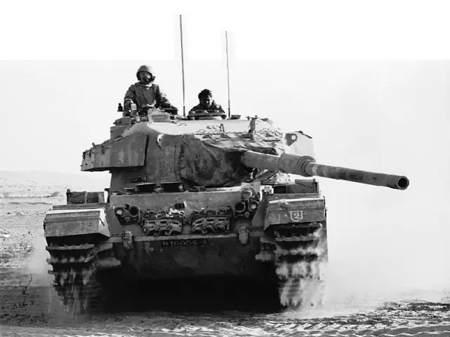

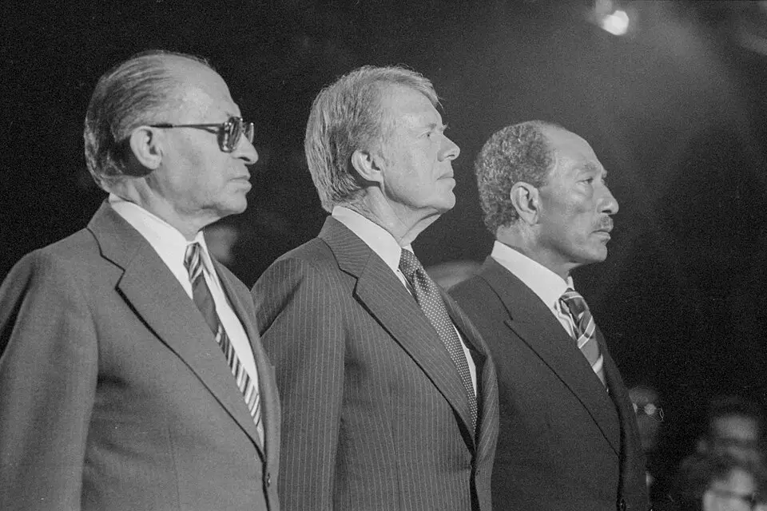


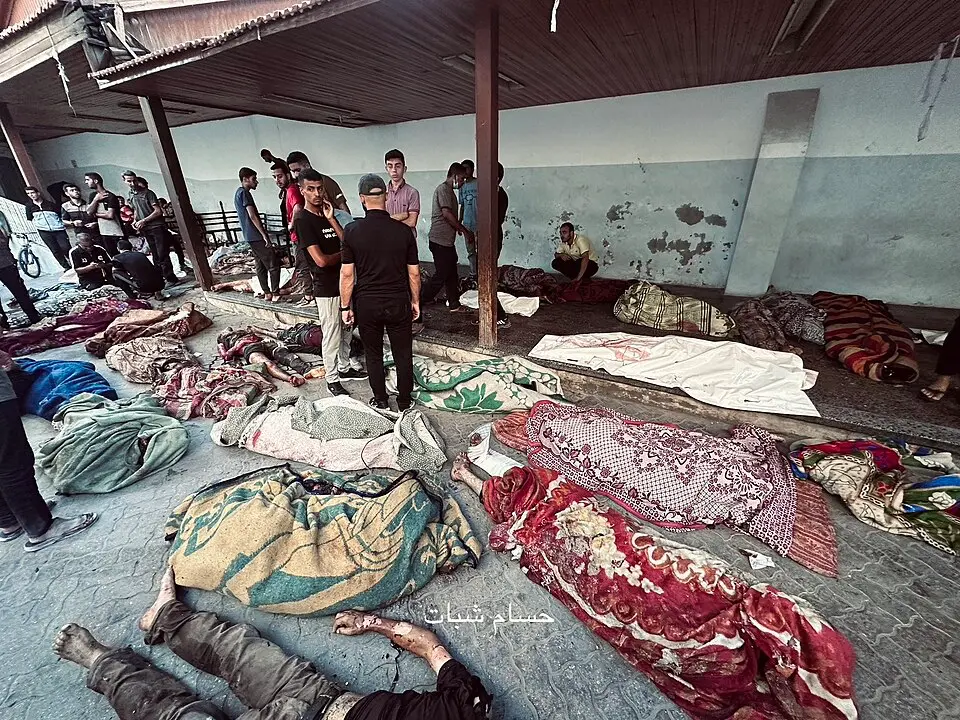


Cartography of the conflict
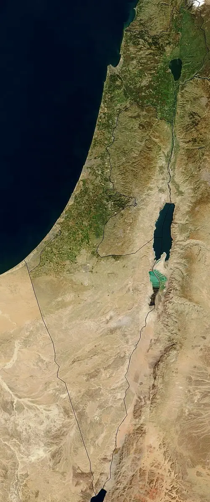
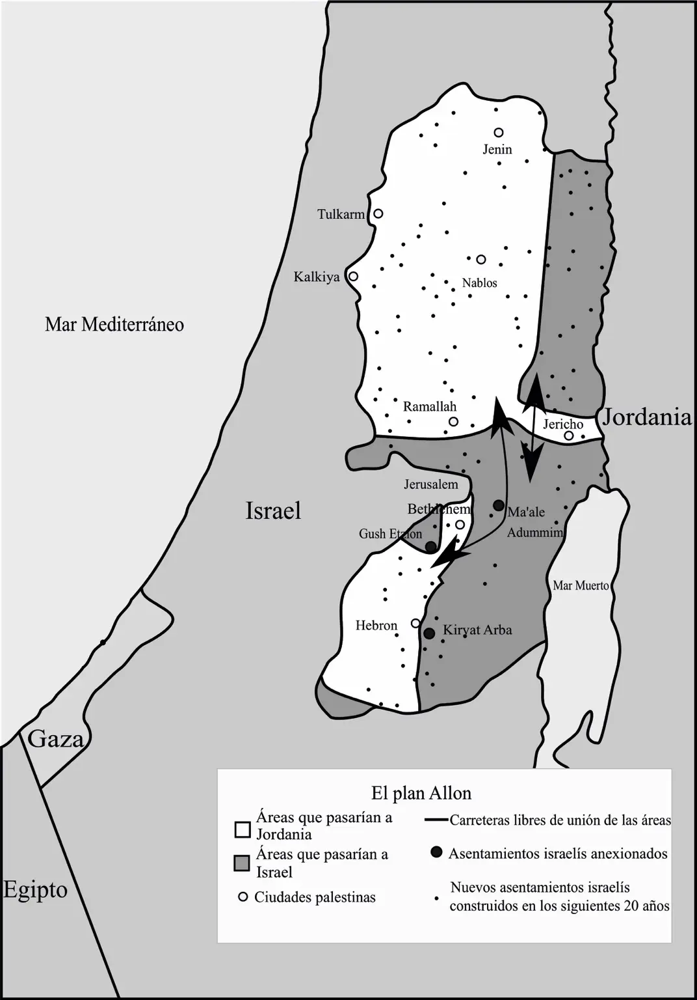
The pieces of the conflict

The Palestinian exodus of 1948 shaped a collective memory built around loss, displacement and an impossible return.

The creation of the state shifted the political balance of the Middle East and opened a new era of wars, diplomacy and territorial disputes.
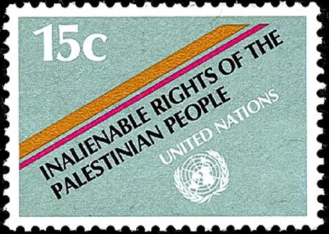
The evolution of Palestinian national identity between armed resistance, international diplomacy and the fight for recognition.
From an Islamist movement born during the First Intifada to control of Gaza and its impact on the conflict today.
A state defined by constant security concerns, international pressure and deep political and social divisions.

The expansion of settlements in the West Bank became one of the most controversial points of the conflict.
No filters
The conflict between Israel and Palestine can't be understood from a single date, a single victim, a single border or a single version of events. Understanding it means going back centuries, accepting contradictions, and looking squarely at everything each narrative tends to leave out.
Available on Amazon
A historical, political and human journey through one of the most complex conflicts of our time.
Buy on Amazon